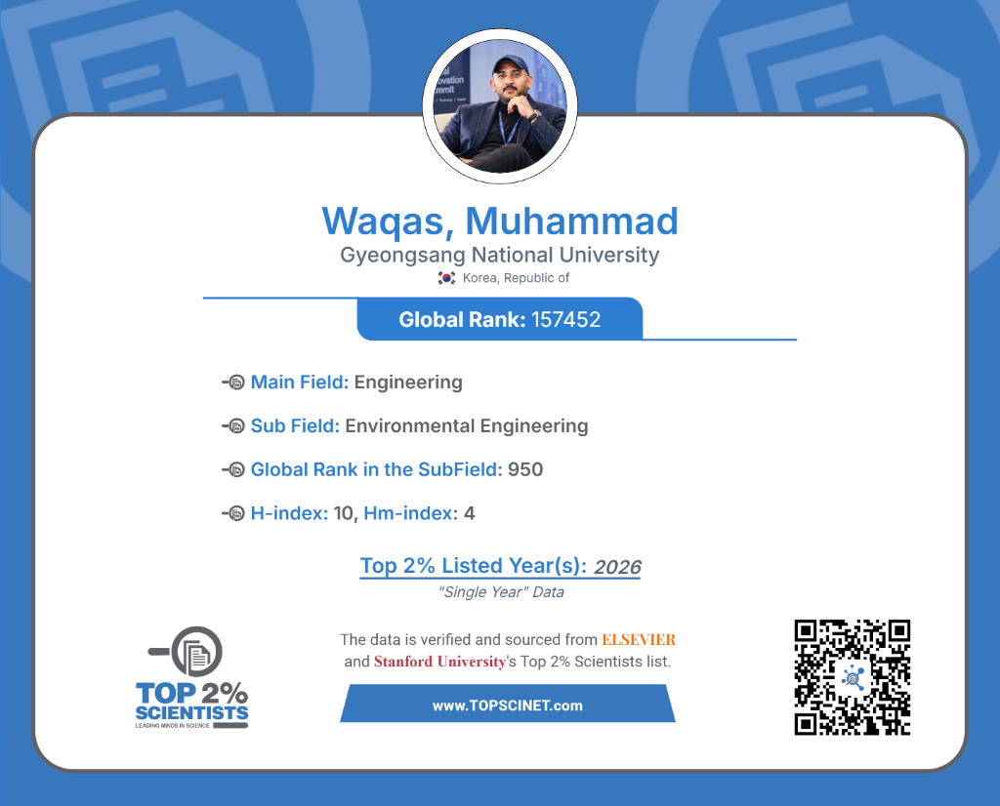
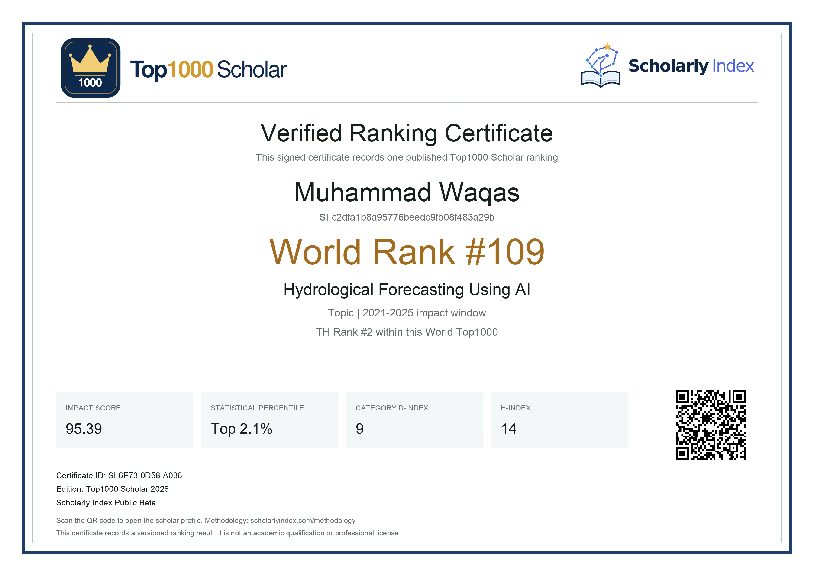
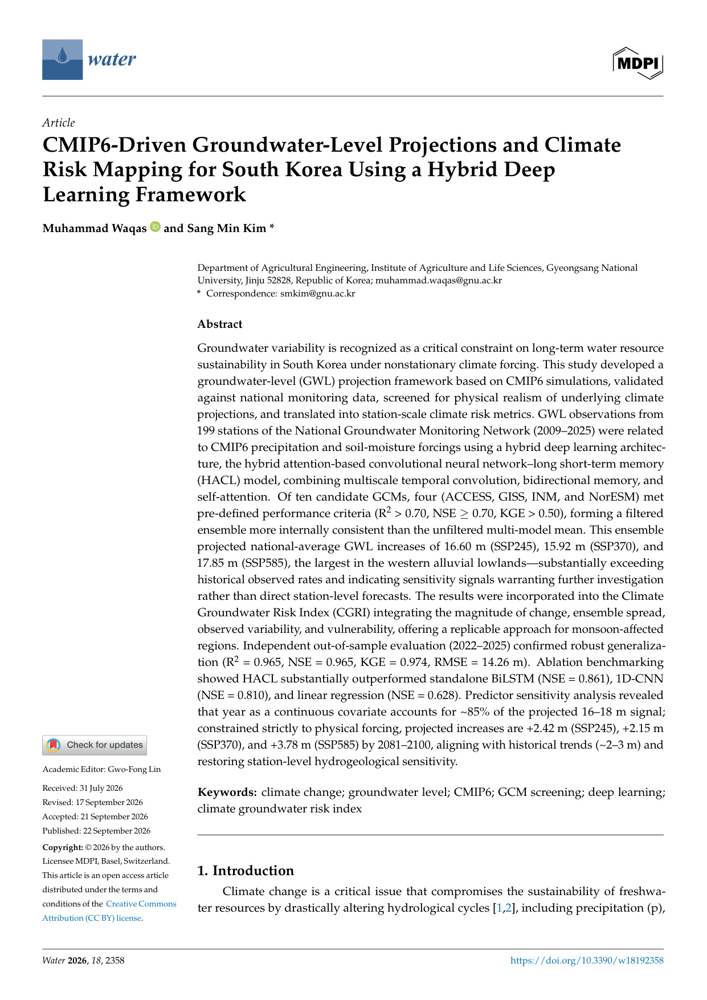

Climate Forecasting AI
Machine learning and deep learning workflows for precipitation forecasting, drought projection, CMIP6 downscaling, and ENSO teleconnections.
AI Climate Intelligence • Hydrology • Agriculture
Environmental AI researcher advancing predictive modeling across climate risk, groundwater dynamics, river-basin hydrology, and smart agricultural systems.
Global Scholarly Honors & Verified Recognitions
Verified recognition across premier global scientific indexes: Stanford University & Elsevier World's Top 2% Scientists and Scholarly Index World Top1000.
Main Field: Engineering • Sub-Field: Environmental Engineering
Verified and sourced from Elsevier and Stanford University's Top 2% Scientists database (TOPSCINET). Dr. Muhammad Waqas is officially recognized among the top 2% of scientists globally across all fields, securing an elite World Rank of #950 in Environmental Engineering (Global Discipline Rank: 157,452 across all sciences worldwide).
Elsevier & Stanford University
•
Verification: TOPSCINET Verified (2026)
•
Listed: Single Year Data

Topic: Hydrological Forecasting Using AI
Ranked within the global Top1000 and certified under Dr. Waqas's Thailand Affiliation (Doctoral and AI Climate modeling research at King Mongkut's University of Technology Thonburi — KMUTT), honoring high-impact breakthroughs across AI rainfall forecasting, climate downscaling, and river-basin hydrology.
SI-6E73-0D58-A036
•
Scholar Hash: SI-c2dfa1b8a95776beedc9fb08f483a29b

An attention-based hybrid CNN-BiLSTM (HACL) framework integrating 199 telemetric groundwater monitoring stations with multi-GCM CMIP6 climate scenarios and the Climate Groundwater Risk Index (CGRI) across South Korea.

AI Climate Intelligence
I combine environmental domain knowledge with reproducible modeling to connect complex climate, water, and agricultural datasets with clear scientific outputs and real-world policy insights.
Research Focus
Multi-disciplinary innovation connecting artificial intelligence with physical Earth systems.
Machine learning and deep learning workflows for precipitation forecasting, drought projection, CMIP6 downscaling, and ENSO teleconnections.
River-basin modeling, groundwater head prediction, CGRI risk mapping, streamflow forecasting, and automated evapotranspiration estimation.
Hybrid architectures including WaveNet-LSTM, Geospatial Graph Neural Networks (GNN), Attention mechanisms, and Physics-Informed Neural Networks (PINNs).
Crop water demand modeling, smart greenhouse circulation, circular biorefinery, biochar soil amendment, and heavy metal environmental remediation.